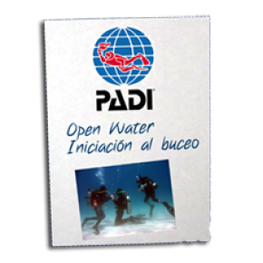
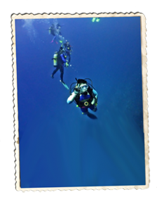
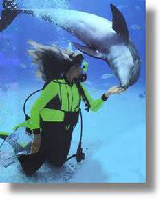

AVENTURAS PARA EL FIN DE SEMANA


BAUTISMO
¿QUE ES UN BAUTISMO DE BUCEO ?
Es una primera toma de contacto con el buceo deportivo, se trata de una inmersión a poca profundidad guiada en todo momento por un
instructor del centro, con el fin de poder disfrutar de esta
maravillosa experiencia con total seguridad.
DESARROLLO DE LA ACTIVIDAD
En primer lugar nuestros monitores impartirán unas nociones básicas
sobre los fundamentos del buceo, el equipo que vamos a utilizar y como se va a desarrollar la actividad. Finalizada esta breve explicación pasamos al montaje de equipos siempre con la ayuda de nuestro instructor, y nos dirigimos a la zona elegida para realizar la inmersión. Una vez ubicados en el lugar de inmersión (Cala) organizamos la entrada en el agua por grupos ( siempre un instructor por alumno) y repasamos los conocimientos básicos. Ahora sólo queda equiparnos y a bucear. Para ello iremos siempre acompañados de un instructor que controlará en todo momento la inmersión. Una vez finalizada la actividad se hará entrega de un diploma acreditativo de la actividad.
OPEN WATER
ESPECIALIDAD OWD
El curso de buceador Open Water Diver OWD, te permite adquirir los conocimientos necesarios para bucear en cualquier lugar del mundo y te certifica para hacerlo. Nuestros instructores PADI te ensañaran a desenvolverte de forma segura y tranquila en el medio subacuatico.
Estaras habilitado para alquilar equipos y contratar excursiones hasta una profundidad máxima de 18 m. sin que sea necesaria la presencia de un instructor.
  DESCRIPCIÓN
Consta de dos módulos; uno teórico y otro práctico, el teórico quedaría visto en doce horas aproximadamente, incluido el examen final, para este módulo contamos además de las explicaciones y aclaraciones del instructor del centro con material de apoyo audiovisual.
El módulo de práctica (mucho más interesante) consiste en 5 inmersiones; 3 de las cuales se realizarán desde Cala a poca profundidad desarrollando una serie de ejercicios básicos que nos permitan superar cualquier imprevisto o contratiempo que se pueda presentar durante la práctica de este deporte.
Una vez dominados los ejercicios básicos de seguridad, y para las siguientes inmersiones, simplemente nos dedicaremos a disfrutar de los fondos marinos y control de la flotabilidad, haciendo un recordatorio de los ejercicios básicos.
En la última inmersión podemos disfrutar de la riqueza de los fondos marinos dentro de la Reserva de Cabo de Palos, siempre que las condiciones meteorológicas lo permitan.